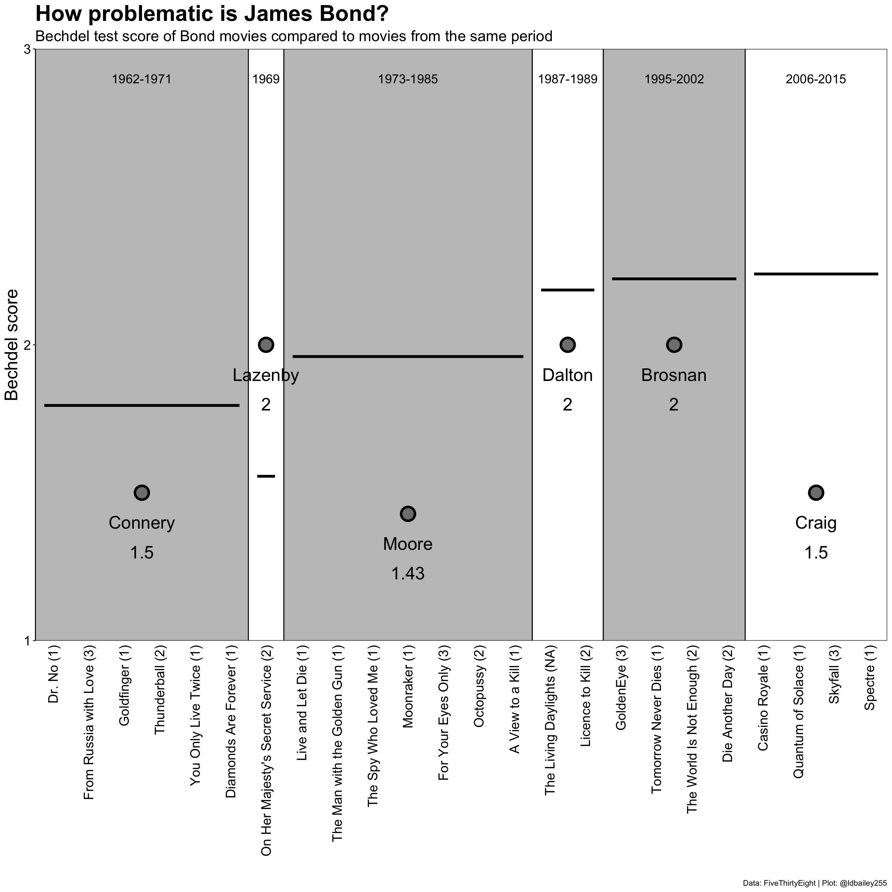

library(tidytuesdayR) #To download the data
library(dplyr) #For data wrangling
library(ggplot2) #For plotting
library(fuzzyjoin) #For string matching
library(showtext) #Use fonts stored on the Google Fonts database
## For adding images to our plot
library(png) #For reading .png files
library(gridExtra) #For turning .png files into grobs
library(egg) #For adding grob objects to our plot
üë¥ Old post
This post was created before the release of R v4.1.0. Some code might be outdated.
Another week, another TidyTuesday! As before, this figure was created during the CorrelAid TidyTuesday meetup where we brainstorm and troubleshoot ideas. You can see the plots from all the CorrelAid TidyTuesday meetups here.
Introduction: The Bechdel test and James Bond
In 1985, cartoonist Alison Bechdel published a cartoon that described 3 ‘rules’ used to rate female representation in movies. The movie must:
- Have at least 2 named women in it.
- These women talk with each other.
- The women talk about something other than a man.
Sounds pretty simple, right? But very few films (fewer than 50%) pass the eponymous Bechdel test, including major blockbusters like “The Hobbit: An Unexpected Journey” and “The Avengers”.
One film series that we would not expect to do particularly well on the Bechdel test is that of James Bond. Since the release of Dr. No in 1962, 007 has never been known for his healthy relationship to women. But how do the Bond films actually compare to movies at large, and how have they changed over time?
Setup: Data and packages
This week’s TidyTuesday included two datasets taken from FiveThirtyEight, one complete dataset including Bechdel test scores for 8,839 movies since 1888 and a smaller subset with additional movie data from IMDB. The packages used for this post were:
To start with we need to download the data and separate out the different datasets.
tuesdata <- tidytuesdayR::tt_load(2021, week = 11)
Downloading file 1 of 2: `raw_bechdel.csv`
Downloading file 2 of 2: `movies.csv`bechdel <- tuesdata$raw_bechdel
movies <- tuesdata$moviesWe’ll create a custom ggplot theme so we don’t need to make these aesthetic changes in every plot.
my_theme <- function(){
theme_classic() %+replace%
#Remove legend by default
theme(legend.position = "none",
#Make axes black
axis.text = element_text(colour = "black"),
#Make clear titles and caption
plot.title = element_text(size = 18, face = "bold", hjust = 0),
plot.caption = element_text(size = 8, hjust = 1))
}Exploration: How does the data look?
For this visualisation, we’re only really interested in the full Bechdel test dataset and don’t need the more detailed movie information. Rather than treating the Bechdel test as pass/fail, each movie will be given a score from 0 (less than 2 named women) to 3 (passes the full Bechdel test). The full Bechdel test dataframe is fairly simple and should be easy to use. The title, rating, and year columns will be important to help us identify Bond (and non-Bond movies) and there don’t appear to be any nasty surprises in the data structure!
tail(bechdel)# A tibble: 6 × 5
year id imdb_id title rating
<dbl> <dbl> <chr> <chr> <dbl>
1 2021 9473 10332588 Finding ’Ohana 3
2 2021 9498 5144174 The Dry 3
3 2021 9505 10919362 Sweetheart 3
4 2021 9501 10813940 Ginny and Georgia 2
5 2021 9504 5109280 Raya and the Last Dragon 3
6 2021 9500 9286908 High Ground 2If we want to focus on Bond movies, we need to include some external data to identify which films are in the Bond franchise. We’ll consider all Bond movies except the ‘spy-parody’ Casino Royale from 1967. We’ll use the fuzzyjoin package to join datasets using movie titles. Fuzzy joining will allow us to match similar titles even if they’re not exactly the same (e.g. missing punctuation or different capitalisation).
bond_movies <- read.csv("./data/james_bond_movies.csv") %>%
#We use fuzzyjoin incase there are slight differences in the titles (e.g. missing ')
fuzzyjoin::stringdist_left_join(bechdel, by = c("movie" = "title")) %>%
#Remove old Casino Royale and select relevant columns
dplyr::filter(!(movie == "Casino Royale" & year == "1967")) %>%
dplyr::select(movie, year, actor, bond_rating = rating) %>%
#Unfortunately one movie (The Living Daylights) doesn't have a Bechdel score.
#We still want to include this in our graph even if it doesn't have a score so we need to manually add the year
mutate(year = case_when(movie == "The Living Daylights" ~ 1987,
TRUE ~ year))
head(bond_movies) movie year actor bond_rating
1 Dr. No 1962 Sean Connery 1
2 From Russia with Love 1963 Sean Connery 3
3 Goldfinger 1964 Sean Connery 1
4 Thunderball 1965 Sean Connery 2
5 You Only Live Twice 1967 Sean Connery 1
6 On Her Majesty's Secret Service 1969 George Lazenby 2Initial plots: What can we see when we start plotting?
We now have Bechdel scores of all (but one) of the Bond movies. To start exploring we can create a very rough plot to look at the average Bechdel score of each James Bond actor.
ggplot(data = bond_movies) +
geom_boxplot(aes(x = actor, y = bond_rating, fill = actor),
colour = "black", width = 0.15, alpha = 0.25) +
#Just use viridis fill for now
scale_fill_viridis_d() +
scale_y_continuous(breaks = c(1, 2, 3)) +
labs(x = "", y = "Bechdel score",
title = "Bechdel score of each Bond",
subtitle = "",
caption = "Data: FiveThirtyEight | Plot: @ldbailey255") +
my_theme() +
theme(axis.text.x = element_text(angle = 90, hjust = 1, vjust = 0.5))Warning: Removed 1 rows containing non-finite values (`stat_boxplot()`).We can see there are differences in the median Bechdel score of each James Bond actor, but this initial plot is a bit lacking. Are the differences we see related to the number of movies each actor starred in? Or are we seeing a cultural shift over time as more movies pass the Bechdel test? We need to disentangle these possibilities.
Firstly, we want to look at the Bechdel score of all other movies during the time James Bond movies were being made.
other_movies <- bechdel %>%
#Remove all Bond movies
fuzzyjoin::stringdist_anti_join(bond_movies, by = c("title" = "movie")) %>%
#Only consider movies in the years since Bond movies started
dplyr::filter(year >= min(bond_movies$year) & year <= max(bond_movies$year))
rollingmean <- other_movies %>%
#Take a mean of Bechdel score for each year
dplyr::group_by(year) %>%
dplyr::summarise(all_movie_rating = mean(rating),
n = n()) %>%
#Create a 3 year rolling mean
dplyr::mutate(lag1 = lag(all_movie_rating),
lead1 = lead(all_movie_rating)) %>%
dplyr::rowwise() %>%
dplyr::mutate(rollingmean_allmovies = mean(c(all_movie_rating, lag1, lead1))) %>%
dplyr::select(-lag1, -lead1) %>%
#Remove years where a rolling mean is not possible
dplyr::filter(!is.na(rollingmean_allmovies))We next need to define the Bond ‘eras’ (the periods during which each actor played James Bond).
bond_eras <- bond_movies %>%
group_by(actor) %>%
summarise(start = min(year),
end = max(year),
midyear = mean(c(start, end)),
mean_score = mean(bond_rating, na.rm = TRUE))
bond_eras# A tibble: 6 × 5
actor start end midyear mean_score
<chr> <dbl> <dbl> <dbl> <dbl>
1 Daniel Craig 2006 2015 2010. 1.5
2 George Lazenby 1969 1969 1969 2
3 Pierce Brosnan 1995 2002 1998. 2
4 Roger Moore 1973 1985 1979 1.43
5 Sean Connery 1962 1971 1966. 1.5
6 Timothy Dalton 1987 1989 1988 2 Now we can plot the mean Bechdel scores over time and compare it to the mean Bechdel score of each Bond actor!
ggplot() +
#Adjust the location so that movies fall in the middle of a year rather than at the start
geom_rect(data = bond_eras, aes(xmin = start, xmax = end + 1, ymin = -Inf, ymax = Inf, fill = actor),
colour = NA) +
geom_path(data = rollingmean, aes(x = year + 0.5, y = rollingmean_allmovies), size = 1, colour = "blue") +
geom_point(data = bond_eras, aes(x = midyear, y = mean_score), size = 3, shape = 21, fill = "grey50") +
scale_fill_viridis_d(name = "") +
scale_x_continuous(breaks = seq(1960, 2020, 5), name = "") +
scale_y_continuous(breaks = c(1, 2, 3)) +
labs(x = "", y = "Bechdel score",
title = "Bechdel score of each Bond",
subtitle = "",
caption = "Data: FiveThirtyEight | Plot: @ldbailey255") +
my_theme() +
theme(legend.position = "right")Warning: Using `size` aesthetic for lines was deprecated in ggplot2 3.4.0.
ℹ Please use `linewidth` instead.Digging deeper: Adding images
While this graph serves our purposes, I don’t think it’s the ideal format to present the data. For one, by using year on the x-axis, we include many years where James Bond movies were not being made. Another problem we encounter is that the Bond ‘eras’ are not sequential, because one actor (George Lazenby) made a movie during the Sean Connery era. As an alternative, we can use the sequence of Bond movies as the x-axis. We can then compare the mean Bechdel score of each Bond to the mean Bechdel score of contemporary movies during their time in the role.
#Specify the era 'order' of the actors
bond_order <- data.frame(actor = c("Sean Connery",
"George Lazenby",
"Roger Moore",
"Timothy Dalton",
"Pierce Brosnan",
"Daniel Craig")) %>%
mutate(era_nr = 1:n())
bond_era_ratings <- bond_movies %>%
left_join(bond_order, by = "actor") %>%
arrange(era_nr, year) %>%
#Have a movie number that can be used as our x axis
tibble::rownames_to_column(var = "movie_nr") %>%
#Separate first name and surname
tidyr::separate(actor, into = c("given_name", "surname"), sep = " ") %>%
group_by(surname) %>%
summarise(mean_bond_rating = mean(bond_rating, na.rm = TRUE),
first_yr = first(year),
#The first and last number are buffered by 0.5 on either side
#This allows George Lazanby (with 1 movie) to still be visible
first_nr = as.integer(first(movie_nr)) - 0.5,
last_yr = last(year),
last_nr = as.integer(last(movie_nr)) + 0.5,
middle_point = mean(c(first_nr, last_nr))) %>%
#For each actor, determine the mean Bechdel score of all other movies during their era
mutate(mean_movie_rating = purrr::map2_dbl(.x = first_yr, .y = last_yr,
.f = function(first, last, movie_db){
movie_db_subset <- other_movies %>%
filter(year >= first & year <= last)
mean(movie_db_subset$rating)
}, movie_db = other_movies),
year_text = case_when(first_yr == last_yr ~ as.character(first_yr),
TRUE ~ paste(first_yr, last_yr, sep = "-")))
#Although we use movie number as our x axis, we want the labels to be the movie names
#and the movie's Bechdel score
x_labels <- bond_movies %>%
left_join(bond_order, by = "actor") %>%
arrange(era_nr, year) %>%
tibble::rownames_to_column(var = "movie_nr") %>%
mutate(movie_nr = as.integer(movie_nr),
movie = paste0(movie, ' (', bond_rating, ')'))ggplot(data = bond_era_ratings) +
geom_rect(aes(xmin = first_nr, xmax = last_nr, ymin = -Inf, ymax = Inf, fill = surname),
colour = "black", alpha = 0.5) +
geom_segment(aes(x = first_nr + 0.25, xend = last_nr - 0.25, y = mean_movie_rating, yend = mean_movie_rating), size = 1.5) +
geom_text(aes(x = middle_point, y = 2.9, label = year_text),
size = 5) +
geom_point(aes(x = middle_point, y = mean_bond_rating),
size = 6, shape = 21, stroke = 2, fill = "grey50") +
geom_text(aes(x = middle_point, y = mean_bond_rating - 0.1,
label = surname), size = 7) +
geom_text(aes(x = middle_point, y = mean_bond_rating - 0.2,
label = round(mean_bond_rating, 2)), size = 7) +
scale_x_continuous(breaks = x_labels$movie_nr, labels = x_labels$movie) +
scale_y_continuous(limits = c(1, 3), breaks = 1:3) +
scale_fill_manual(values = c("grey50", "grey50", "white", "white", "white", "grey50"), name = "") +
scale_colour_viridis_d(name = "") +
labs(x = "", y = "Bechdel score",
title = "How problematic is James Bond?",
subtitle = "Bechdel test score of Bond movies compared to movies from the same period",
caption = "Data: FiveThirtyEight | Plot: @ldbailey255") +
coord_cartesian(expand = FALSE) +
theme_classic() +
theme(legend.position = "none",
axis.text.x = element_text(angle = 90, hjust = 1, vjust = 0.5, colour = "black", size = 15),
axis.ticks.x = element_blank(),
axis.line.x = element_blank(),
axis.text.y = element_text(size = 15, colour = "black"),
axis.title = element_text(size = 20),
plot.title = element_text(size = 25, face = "bold"),
plot.subtitle = element_text(size = 17))
Using points to show the ratings of different actors works well enough, but perhaps headshots of the different actors would be more effective. For this, we use the png and grid packages to create a grob, or ‘graphical object’. grobs come from the grid package and also underlie ggplot2 and grobs can be inserted directly into our plot using the geom_custom function from the egg package.
First, we need to convert the .png files into grobs and store this in a dataframe.
#List all .png files
all_png <- data.frame(file = list.files("./data", pattern = ".png", full.names = TRUE)) %>%
#Extract surname of each actor from the png file path
mutate(surname = stringr::str_to_title(stringr::str_sub(basename(file), end = -5))) %>%
#For each file, read it in as a .png and then convert to a grob
rowwise() %>%
mutate(grob = list(grid::rasterGrob(png::readPNG(source = file),
width = unit(1, "cm"), height = unit(1, "cm"))))
#Join data frame with grobs into original data
bond_era_ratings_png <- bond_era_ratings %>%
left_join(all_png, by = "surname")Then we can add these png derived grobs into the plot in place of points.
ggplot(data = bond_era_ratings_png) +
geom_rect(aes(xmin = first_nr, xmax = last_nr, ymin = -Inf, ymax = Inf, fill = surname),
colour = "black", alpha = 0.5) +
geom_segment(aes(x = first_nr + 0.25, xend = last_nr - 0.25, y = mean_movie_rating, yend = mean_movie_rating), size = 1.5) +
geom_text(aes(x = middle_point, y = 2.9, label = year_text),
size = 5) +
geom_text(aes(x = middle_point, y = mean_bond_rating - 0.2,
label = round(mean_bond_rating, 2)), size = 7) +
egg::geom_custom(aes(x = middle_point, y = mean_bond_rating, data = grob), grob_fun = "identity") +
scale_x_continuous(breaks = seq(1, 24, 1), labels = x_labels$movie) +
scale_y_continuous(limits = c(1, 3), breaks = 1:3) +
scale_fill_manual(values = c("grey50", "grey50", "white", "white", "white", "grey50"), name = "") +
scale_colour_viridis_d(name = "") +
labs(x = "", y = "Bechdel score",
title = "How problematic is James Bond?",
subtitle = "Bechdel test score of Bond movies compared to movies from the same period",
caption = "Data: FiveThirtyEight | Plot: @ldbailey255") +
coord_cartesian(expand = FALSE) +
theme_classic() +
theme(legend.position = "none",
axis.text.x = element_text(angle = 90, hjust = 1, vjust = 0.5, colour = "black", size = 15),
axis.ticks.x = element_blank(),
axis.line.x = element_blank(),
axis.text.y = element_text(size = 15, colour = "black"),
axis.title = element_text(size = 20),
plot.title = element_text(size = 25, face = "bold"),
plot.subtitle = element_text(size = 17),
plot.caption = element_text(size = 20))
The finishing touches: Making things look pretty
We’ll now add some custom fonts and additional explanation to the plot. To add additional annotation to a plot I like to again take advantage of grobs. We can make our whole plot into a grob and place it inside a new (empty) plotting environment where the annotation can be included, using the geom_annotate function. With this method you don’t need to mess around with your plot margins, and it’s particularly effective if you want to include multiple plots together or create custom legends.
#Load a font from Google Fonts
sysfonts::font_add_google(name = "Mouse Memoirs", family = "Mouse")
sysfonts::font_add_google("Ubuntu Mono", "Ubuntu Mono")
#Specify that the showtext package should be used
#for rendering text
showtext::showtext_auto()main_plot <- ggplot(data = bond_era_ratings_png) +
geom_rect(aes(xmin = first_nr, xmax = last_nr, ymin = -Inf, ymax = Inf, fill = surname),
colour = NA, alpha = 0.5) +
geom_segment(aes(x = first_nr + 0.25, xend = last_nr - 0.25, y = mean_movie_rating, yend = mean_movie_rating), size = 0.75) +
geom_text(aes(x = middle_point, y = 2.9, label = year_text),
family = "Mouse", size = 7.5/.pt) +
geom_text(aes(x = middle_point, y = mean_bond_rating - 0.155,
label = surname), family = "Mouse", colour = "#D53129", size = 7.5/.pt) +
geom_text(aes(x = middle_point, y = mean_bond_rating - 0.23,
label = format(round(mean_bond_rating, 2), nsmall = 2)), family = "Mouse",
size = 7.5/.pt) +
geom_text(aes(x = middle_point, y = mean_movie_rating + 0.05,
label = format(round(mean_movie_rating, 2), nsmall = 2)), family = "Mouse",
size = 7.5/.pt) +
egg::geom_custom(aes(x = middle_point, y = mean_bond_rating, data = grob), grob_fun = "identity") +
scale_x_continuous(limits = c(0, NA), breaks = x_labels$movie_nr, labels = x_labels$movie) +
scale_y_continuous(limits = c(1, 3), breaks = 1:3) +
scale_fill_manual(values = c("grey50", "grey50", "white", "white", "white", "grey50"), name = "") +
scale_colour_viridis_d(name = "") +
labs(x = "", y = "<- Worse Bechdel score Better ->",
title = "How problematic is James Bond?",
subtitle = "Bechdel test score of Bond movies compared to movies from the same period") +
coord_fixed(ratio = 7, expand = FALSE) +
theme_classic() +
theme(legend.position = "none",
axis.text.x = element_text(angle = 90, hjust = 1, vjust = 0.5, size = 7.5,
family = "Mouse", colour = "black"),
axis.text.y = element_text(family = "Mouse", colour = "black", size = 7.5),
axis.ticks.x = element_blank(),
axis.line.x = element_blank(),
axis.title = element_text(family = "Mouse", size = 20),
plot.title = element_text(family = "Mouse", size = 25, margin = margin(b = 3.75)),
plot.subtitle = element_text(size = 7.5, margin = margin(b = 7.5)))
main <- ggplot2::ggplotGrob(main_plot)
labels <- data.frame(x = 0.87, y = c(0.6, 0.375),
text = c("Movies from the same period",
"Score of Bond movies"))
ggplot()+
scale_x_continuous(limits = c(0, 1), expand = c(0, 0)) +
scale_y_continuous(limits = c(0.35, 0.65), expand = c(0, 0)) +
annotation_custom(grob = main, xmin = 0, xmax = 0.75, ymin = 0, ymax = 1) +
geom_curve(aes(x = 0.825, xend = 0.7, y = 0.6, yend = 0.55), curvature = 0.2,
arrow = arrow(length = unit(0.1, "inches")), size = 1) +
geom_curve(aes(x = 0.825, xend = 0.7, y = 0.375, yend = 0.45), curvature = -0.2,
arrow = arrow(length = unit(0.1, "inches")), size = 1) +
geom_label(data = labels, aes(x = x, y = y, label = text),
family = "Mouse", colour = '#D53129', size = 7.5/.pt) +
labs(caption = "Data: FiveThirtyEight | Plot: @ldbailey255") +
theme_void() +
theme(plot.caption = element_text(family = "Ubuntu Mono", size = 5))Conclusion:
The mean Bechdel score of movies has increased steadily since the first Bond movie was released in 1962, but Bond movies haven’t kept up! James Bond films have never been known for their realistic portrayal of female characters, but it seems that the newest Bond movies with Daniel Craig are particularly bad at passing the Bechdel test when compared to their contemporaries.
Of course, the Bechdel test has been rightly criticised as a very simple method for assessing female representation and ignores other issues, such as the role of the female characters in the film, the amount of dialogue given to women, and the representation of women of colour. There are now a plethora of new tests that seek to provide a better assessment of the role of women both in front of and behind the camera. Even so, it’s striking that all but one of Daniel Craig’s films as James Bond fails to even include dialogue between two female characters! Will the upcoming No Time To Die be any better? Will a new James Bond actor herald a change to the franchise’s Bechdel scores? Or is 007 just a bit out of date?